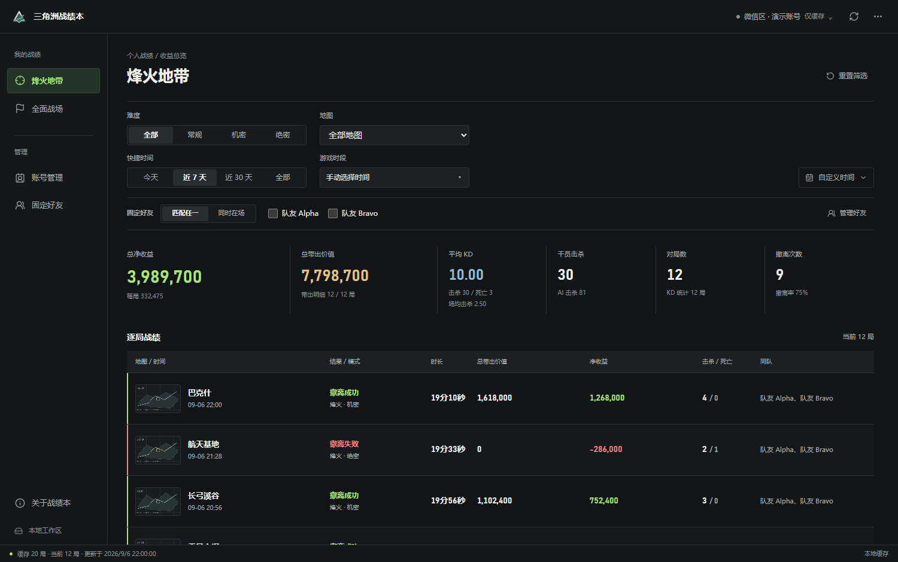
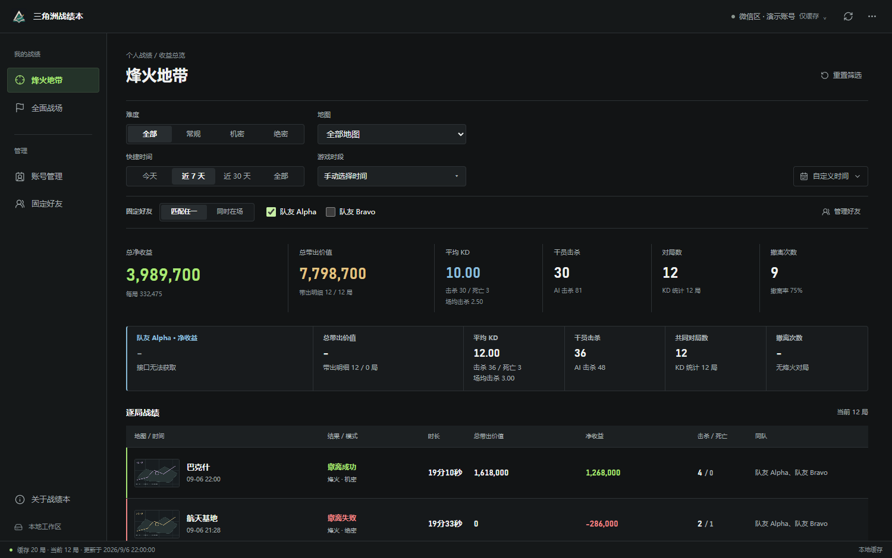
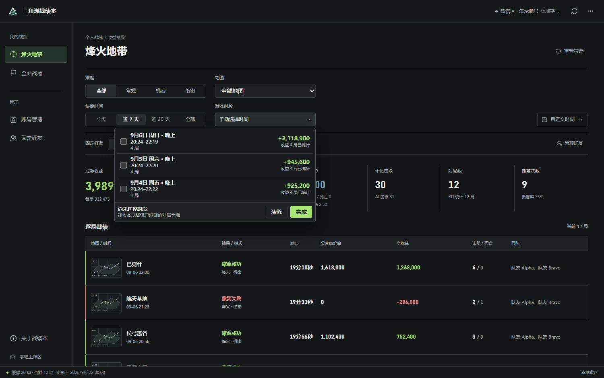

安装版 推荐
自己的电脑，日常使用。包含开始菜单入口，支持应用内更新。
每次出击，都有一本明白账。
赚亏看得清，队友有得比。
把每一晚的战绩，留在自己的电脑里。
Windows 10 / 11 · 微信区 / QQ 区 · 非官方个人工具
01 / 复盘你的每次出击
从一晚的总收益，
看到每一局的来龙去脉。
净收益、带出价值、KD 与撤离表现，一眼看清。再按地图和难度，找到值得复盘的那一局。

固定常玩的朋友，对照共同局里的带出、KD、击杀和撤离表现。好友入场成本不可获取，不计算好友净收益。

自动识别连续开黑时段。只看其中一段，或多选几段合并复盘，不让同一天的赚亏相互掩盖。

以上为实际程序页面，使用虚构演示数据，不包含用户信息。
02 / 开始使用
下载 Windows 安装版并打开。也可选择完整解压便携 ZIP。
在电脑版微信打开《三角洲行动》官方小程序，切到需要读取的微信区或 QQ 区账号。
在程序中读取小程序账号后同步战绩。已有账号可直接切换，登录过期时重新读取。
03 / 获取战绩本
自己的电脑，日常使用。包含开始菜单入口，支持应用内更新。
无需安装，完整解压即可运行。请将启动器与 app 文件夹一起保留。
需要电脑版微信承载官方小程序。QQ 区同样通过此入口读取，不需要电脑版 QQ。
下载之前
不是。三角洲战绩本是非官方个人工具，主要用于本地战绩复盘，与《三角洲行动》官方无隶属关系。
默认不会。同步、筛选与缓存都在本机完成，账号凭据使用 Windows 当前用户加密。项目服务器提供下载与版本检查。可选共享页是独立能力，只有显式配置并运行上传工具才会上传整理后的当前账号战绩。
目前提供 Windows 桌面程序，没有独立的 Android 或 iPhone 版本。手机可以查看此下载官网，但不能在手机上运行 Windows 程序。
账号缓存分别保存。切换小程序账号不会主动删除已保存的账号，更新和卸载也不会主动清除本机战绩。登录态过期只影响继续同步，已有缓存仍然可看。
战绩来自官方小程序接口。接口繁忙、字段缺失或数据尚未返回时，部分详情会暂不可用；未知数据不会伪装成零值，也不会用队友带出价值冒充队友净收益。